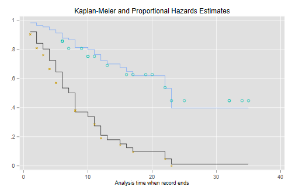
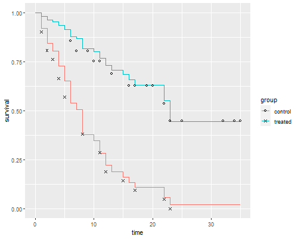

12 December 2017
We continue our analysis of the Gehan data by fitting a proportional hazards model. This is the same dataset used as an example in Cox’s original paper: Cox, D.R. (1972) Regression Models and Life tables, (with discussion) Journal of the Royal Statistical Society, 34: 187–220.
The first task is to read and
stset the data. I also create a dummy variable for
treated.
. infile group weeks relapse using ///
> https://grodri.github.io/datasets/gehan.raw, clear
(42 observations read)
. gen treated = group == 2
. stset weeks, failure(relapse)
Survival-time data settings
Failure event: relapse!=0 & relapse<.
Observed time interval: (0, weeks]
Exit on or before: failure
──────────────────────────────────────────────────────────────────────────
42 total observations
0 exclusions
──────────────────────────────────────────────────────────────────────────
42 observations remaining, representing
30 failures in single-record/single-failure data
541 total analysis time at risk and under observation
At risk from t = 0
Earliest observed entry t = 0
Last observed exit t = 35
> gehan <- read.table("https://grodri.github.io/datasets/gehan.dat")
> names(gehan)
[1] "group" "weeks" "relapse"
> summarize(gehan, events = sum(relapse), exposure = sum(weeks))
events exposure
1 30 541
> gehan <- mutate(gehan, treated = as.numeric(group == "treated"))
Here’s a run fitting a Cox model with all the defaults
. stcox treated
Failure _d: relapse
Analysis time _t: weeks
Iteration 0: log likelihood = -93.98505
Iteration 1: log likelihood = -86.385606
Iteration 2: log likelihood = -86.379623
Iteration 3: log likelihood = -86.379622
Refining estimates:
Iteration 0: log likelihood = -86.379622
Cox regression with Breslow method for ties
No. of subjects = 42 Number of obs = 42
No. of failures = 30
Time at risk = 541
LR chi2(1) = 15.21
Log likelihood = -86.379622 Prob > chi2 = 0.0001
─────────────┬────────────────────────────────────────────────────────────────
_t │ Haz. ratio Std. err. z P>|z| [95% conf. interval]
─────────────┼────────────────────────────────────────────────────────────────
treated │ .2210887 .0905501 -3.68 0.000 .0990706 .4933877
─────────────┴────────────────────────────────────────────────────────────────
. di _b[treated]
-1.5091914
> library(survival)
> cm <- coxph(Surv(weeks, relapse) ~ treated, data = gehan)
> cm
Call:
coxph(formula = Surv(weeks, relapse) ~ treated, data = gehan)
coef exp(coef) se(coef) z p
treated -1.5721 0.2076 0.4124 -3.812 0.000138
Likelihood ratio test=16.35 on 1 df, p=5.261e-05
n= 42, number of events= 30
Stata reports hazard ratios unless you specify
the option nohr. R reports
log-relative risks, but also exponentiates the coefficients to obtain
hazard ratios. We see that the treatment reduced the risk of
relapse by almost 80% at any duration.
There are various options for handling ties. Cox’s original proposal relies on the discrete partial likelihood. A closely-related alternative due to Kalbfleisch and Prentice uses the marginal likelihood of the ranks. Both methods are computationally intensive. A good fast approximation is due to Efron, and a simpler and faster, though somewhat less accurate, method is due to Breslow and Peto. See the notes for details.
In terms of our software, Stata implements all
four using the options exactp, exactm,
efron and breslow. The default is
breslow but I recommend you always use
efron. R implements all but the
marginal likelihood, using the argument ties with possible
values “efron”, “breslow”, and “exact”. Let us compare them
all.
. estimates store breslow
. quietly stcox treated, efron
. estimates store efron
. quietly stcox treated, exactm
. estimates store exactm
. quietly stcox treated, exactp
. estimates store exactp
. estimates table breslow efron exactm exactp
─────────────┬────────────────────────────────────────────────────
Variable │ breslow efron exactm exactp
─────────────┼────────────────────────────────────────────────────
treated │ -1.5091914 -1.5721251 -1.5981915 -1.628244
─────────────┴────────────────────────────────────────────────────
> cmb <- coxph(Surv(weeks, relapse) ~ treated, data = gehan, ties="breslow")
> cmp <- coxph(Surv(weeks, relapse) ~ treated, data = gehan, ties="exact")
> data.frame(breslow = coef(cmb), efron = coef(cm), exact = coef(cmp))
breslow efron exact
treated -1.509191 -1.572125 -1.628244
As you can see, Efron’s approximation is closer to the exact partial likelihood than Breslow’s. The marginal likelihood is even closer. Cox reported a log-likelihood of -1.65 in his paper, which he obtained by evaluating the likelihood in a grid of points. The more exact calculations here yield -1.63, so he did pretty well by hand (see page 197 in the paper).
One way to test proportionality of hazards is to introduce interactions with duration. In his original paper Cox tried a linear interaction with time. We will do the same, except that he worked with t - 10 to achieve more orthogonality and we will use t.
Stata makes it very easy to introduce interactions with time by providing two options:
tvc(varlist), to specify the variable(s) we want to
interact with time, and
texp(expression), to specify a function of time
_t, typically just time, texp(_t), or
log-time, texp(log(_t).
Stata will then create a variable equal to the product of the
variable specified in tvc() by the time expression
specified in texp() and add it to the model.
Let us use this technique to interact treatment and time
. stcox treated, tvc(treated) texp(_t) efron
Failure _d: relapse
Analysis time _t: weeks
Iteration 0: log likelihood = -93.18427
Iteration 1: log likelihood = -85.34729
Iteration 2: log likelihood = -85.008964
Iteration 3: log likelihood = -85.008326
Iteration 4: log likelihood = -85.008326
Refining estimates:
Iteration 0: log likelihood = -85.008326
Cox regression with Efron method for ties
No. of subjects = 42 Number of obs = 42
No. of failures = 30
Time at risk = 541
LR chi2(2) = 16.35
Log likelihood = -85.008326 Prob > chi2 = 0.0003
─────────────┬────────────────────────────────────────────────────────────────
_t │ Haz. ratio Std. err. z P>|z| [95% conf. interval]
─────────────┼────────────────────────────────────────────────────────────────
main │
treated │ .2057005 .1595878 -2.04 0.042 .0449626 .9410648
─────────────┼────────────────────────────────────────────────────────────────
tvc │
treated │ 1.000865 .0617494 0.01 0.989 .88687 1.129514
─────────────┴────────────────────────────────────────────────────────────────
Note: Variables in tvc equation interacted with _t.
We see that there’s no evidence that the treatment effect changes
linearly with time. BTW we didn’t really have to specify
texp(_t) because that’s the default.
Another possibility is to allow different treatment effects at early and late durations, say before and after 10 weeks. This is easily done by changing the time expression:
. stcox treated, tvc(treated) texp(_t > 10) efron
Failure _d: relapse
Analysis time _t: weeks
Iteration 0: log likelihood = -93.18427
Iteration 1: log likelihood = -84.972656
Iteration 2: log likelihood = -84.74237
Iteration 3: log likelihood = -84.740124
Iteration 4: log likelihood = -84.740124
Refining estimates:
Iteration 0: log likelihood = -84.740124
Cox regression with Efron method for ties
No. of subjects = 42 Number of obs = 42
No. of failures = 30
Time at risk = 541
LR chi2(2) = 16.89
Log likelihood = -84.740124 Prob > chi2 = 0.0002
─────────────┬────────────────────────────────────────────────────────────────
_t │ Haz. ratio Std. err. z P>|z| [95% conf. interval]
─────────────┼────────────────────────────────────────────────────────────────
main │
treated │ .2702224 .1426515 -2.48 0.013 .0960215 .7604559
─────────────┼────────────────────────────────────────────────────────────────
tvc │
treated │ .5475566 .4505425 -0.73 0.464 .1091542 2.746741
─────────────┴────────────────────────────────────────────────────────────────
Note: Variables in tvc equation interacted with _t>10.
The point estimates indicate a 73% reduction in risk in the first ten weeks and an additional 44% reduction after ten weeks, for a total of 85% in the later period. However, the difference in treatment effects between the two periods is not significant.
Because only times with observed failures contribute to the partial likelihood, we can introduce arbitrary interactions by splitting the data at each failure time. As a sanity check, we verify that we obtain the same estimate as before
. gen id = _n // need an id variable to split
. streset, id(id)
-> stset weeks, id(id) failure(relapse)
Survival-time data settings
ID variable: id
Failure event: relapse!=0 & relapse<.
Observed time interval: (weeks[_n-1], weeks]
Exit on or before: failure
──────────────────────────────────────────────────────────────────────────
42 total observations
0 exclusions
──────────────────────────────────────────────────────────────────────────
42 observations remaining, representing
42 subjects
30 failures in single-failure-per-subject data
541 total analysis time at risk and under observation
At risk from t = 0
Earliest observed entry t = 0
Last observed exit t = 35
. stsplit , at(failures)
(17 failure times)
(384 observations (episodes) created)
. quietly stcox treated, efron
. di _b[treated]
-1.5721251
. estimates store ph
> failure_times <- sort(unique(gehan$weeks[gehan$relapse])) > gehanx <- survSplit(gehan, cut = failure_times, + event = "relapse", start = "t0", end = "weeks") > coef(coxph(Surv(t0, weeks, relapse) ~ treated, data=gehanx)) treated -1.572125
We now introduce a linear interaction with time using our dummy
variable for treated. (You could specify
the model as group * t0. R will omit t0
because it is implicit in the baseline hazard and complain that the
model matrix is singular, but the results will be correct. My approach
is a bit cleaner.)
. stcox treated c.treated#c._t, efron
Failure _d: relapse
Analysis time _t: weeks
ID variable: id
Iteration 0: log likelihood = -93.18427
Iteration 1: log likelihood = -85.34729
Iteration 2: log likelihood = -85.008964
Iteration 3: log likelihood = -85.008326
Iteration 4: log likelihood = -85.008326
Refining estimates:
Iteration 0: log likelihood = -85.008326
Cox regression with Efron method for ties
No. of subjects = 42 Number of obs = 426
No. of failures = 30
Time at risk = 541
LR chi2(2) = 16.35
Log likelihood = -85.008326 Prob > chi2 = 0.0003
─────────────┬────────────────────────────────────────────────────────────────
_t │ Haz. ratio Std. err. z P>|z| [95% conf. interval]
─────────────┼────────────────────────────────────────────────────────────────
treated │ .2057005 .1595878 -2.04 0.042 .0449626 .9410648
│
c.treated#│
c._t │ 1.000865 .0617494 0.01 0.989 .88687 1.129514
─────────────┴────────────────────────────────────────────────────────────────
. lrtest ph .
Likelihood-ratio test
Assumption: ph nested within .
LR chi2(1) = 0.00
Prob > chi2 = 0.9888
. stjoin // back to normal
(option censored(0) assumed)
(384 observations eliminated)
> cmx <- coxph(Surv(t0, weeks, relapse) ~ treated + treated:weeks, data=gehanx)
> summary(cmx)
Call:
coxph(formula = Surv(t0, weeks, relapse) ~ treated + treated:weeks,
data = gehanx)
n= 426, number of events= 30
coef exp(coef) se(coef) z Pr(>|z|)
treated -1.5813338 0.2057005 0.7758258 -2.038 0.0415 *
treated:weeks 0.0008651 1.0008655 0.0616960 0.014 0.9888
---
Signif. codes: 0 '***' 0.001 '**' 0.01 '*' 0.05 '.' 0.1 ' ' 1
exp(coef) exp(-coef) lower .95 upper .95
treated 0.2057 4.8614 0.04496 0.9411
treated:weeks 1.0009 0.9991 0.88687 1.1295
Concordance= 0.69 (se = 0.045 )
Likelihood ratio test= 16.35 on 2 df, p=3e-04
Wald test = 14.51 on 2 df, p=7e-04
Score (logrank) test = 17.69 on 2 df, p=1e-04
> c( logLik(cmx), logLik(cm))
[1] -85.00833 -85.00842
We get a Wald test for the interaction term of z = 0.01 and twice a
difference in log-likelihoods of 0.00, so clearly there is no evidence
of an interaction between treatment and time at risk. Note that these are exactly the same results we got with
tvc() and texp()
As an alternative we could allow different treatment effects before and after 10 weeks. We could use the current dataset, but all we really need is to split at 10, so we’ll do just that:
. stsplit dur, at(10)
(21 observations (episodes) created)
. quietly stcox treated, efron // so we can do lrtest
. estimates store ph
. gen after10 = dur == 10
. stcox treated c.treated#c.after10, efron
Failure _d: relapse
Analysis time _t: weeks
ID variable: id
Iteration 0: log likelihood = -93.18427
Iteration 1: log likelihood = -84.972656
Iteration 2: log likelihood = -84.74237
Iteration 3: log likelihood = -84.740124
Iteration 4: log likelihood = -84.740124
Refining estimates:
Iteration 0: log likelihood = -84.740124
Cox regression with Efron method for ties
No. of subjects = 42 Number of obs = 63
No. of failures = 30
Time at risk = 541
LR chi2(2) = 16.89
Log likelihood = -84.740124 Prob > chi2 = 0.0002
─────────────┬────────────────────────────────────────────────────────────────
_t │ Haz. ratio Std. err. z P>|z| [95% conf. interval]
─────────────┼────────────────────────────────────────────────────────────────
treated │ .2702224 .1426515 -2.48 0.013 .0960215 .7604559
│
c.treated#│
c.after10 │ .5475566 .4505425 -0.73 0.464 .1091542 2.746741
─────────────┴────────────────────────────────────────────────────────────────
. lrtest ph .
Likelihood-ratio test
Assumption: ph nested within .
LR chi2(1) = 0.54
Prob > chi2 = 0.4638
. drop dur after10
. stjoin
(option censored(0) assumed)
(21 observations eliminated)
> gehan10 <- survSplit(gehan, cut = 10,
+ event = "relapse", start = "t0", end = "weeks") %>%
+ mutate(after10 = as.numeric(t0 == 10),
+ treated = as.numeric(group == "treated"))
> cm10 <- coxph(Surv(t0, weeks, relapse) ~ treated + treated:after10,
+ data=gehan10)
> summary(cm10)
Call:
coxph(formula = Surv(t0, weeks, relapse) ~ treated + treated:after10,
data = gehan10)
n= 63, number of events= 30
coef exp(coef) se(coef) z Pr(>|z|)
treated -1.3085 0.2702 0.5279 -2.479 0.0132 *
treated:after10 -0.6023 0.5476 0.8228 -0.732 0.4642
---
Signif. codes: 0 '***' 0.001 '**' 0.01 '*' 0.05 '.' 0.1 ' ' 1
exp(coef) exp(-coef) lower .95 upper .95
treated 0.2702 3.701 0.09602 0.7605
treated:after10 0.5476 1.826 0.10915 2.7467
Concordance= 0.69 (se = 0.043 )
Likelihood ratio test= 16.89 on 2 df, p=2e-04
Wald test = 15.31 on 2 df, p=5e-04
Score (logrank) test = 18.91 on 2 df, p=8e-05
> chisq <- 2*(logLik(cm10) - logLik(cm)); chisq
'log Lik.' 0.5366016 (df=2)
The Wald test now yields -0.73 (a chi-squared of 0.53), and the
likelihood ratio test concurs, with a chi-squared of 0.54 on one d.f.
The risk ratio is a bit larger after 10 weeks, but the difference is
still not significant. Note that these are exactly
the same results we got with tvc() and
texp().
Another way to check for proportionality of hazards is to use Schoenfeld residuals (and their scaled counterparts). You can obtain an overall test using the Schoenfeld residuals, or a variable-by-variable test based on the scaled variant. In this case with just one predictor there is only one test, but we’ll see later an example with several predictors.
Stata and R offer several possible transformations of time for the
test, including a user-specified function, but chose different defaults.
In Stata the default is time, but one of the options is km
for the Kaplan-Meier estimate of overall survival. In R the default
transform is “km” for the K-M estimate, but one of the options is
“identity”.
. quietly stcox treated, efron
. estat phtest
Test of proportional-hazards assumption
Time function: Analysis time
─────────────┬──────────────────────────────────
│ chi2 df Prob>chi2
─────────────┼──────────────────────────────────
Global test │ 0.00 1 0.9886
─────────────┴──────────────────────────────────
> zph <- cox.zph(cm , transform="identity")
> zph
chisq df p
treated 0.000197 1 0.99
GLOBAL 0.000197 1 0.99
The test shows that there is no evidence against the proportional
hazards assumption. If there had been, we could get a hint of the nature
of the time dependence by plotting the (scaled) residuals against time
and using a smoother to glean the trend, if any. In R
the cox.zph class has a plot() method which
uses a spline smoother. I specified df=2 because of the
small sample size.
. estat phtest, plot(treated) . graph export phplot.png, width(500) replace file phplot.png saved as PNG format
> png("phplotr.png", width=500, height=400)
> ggfy(zph, df=2)
> dev.off()
null device
1
The residuals show no time trend at all, showing that the treatment hazard ratio is fairly constant over time. (We will confirm this result below with a plot of cumulative hazards that provides more direct evidence.)
The emphasis in the Cox model is on hazard ratios, but one can
calculate a Kaplan-Meier or a Nelson-Aalen estimate of the baseline
survival, as shown in the notes. The baseline is defined as the case
where all covariate values are zero, and this may not make sense in your
data. A popular alternative is to estimate the “baseline” at average
values of all covariates. In our case a much better approach is to
estimate and plot the estimated survival functions for the two groups.
Stata makes this very easy via the
stcurve command
. stcurve, surv at(treated=0) at(treated=1)
It is instructive to compute these “by hand” and compare them with separate Kaplan-Meier estimates for each group, which I will plot using different symbols for treated and controls. The plots connect the point estimates using a step function.
. predict S0, basesurv // control (not mean!) . gen S1 = S0^exp(_b[treated]) // treated . sts gen KM = s, by(treated) // two Kaplan-Meiers . twoway (scatter S0 _t, c(J) ms(none) sort) /// baseline > (scatter S1 _t , c(J) ms(none) sort) /// treated > (scatter KM _t if treated, msymbol(circle_hollow)) /// KM treated > (scatter KM _t if !treated, msymbol(X)) /// KM base > , legend(off) /// > title(Kaplan-Meier and Proportional Hazards Estimates) . graph export coxkm.png, width(500) replace file coxkm.png saved as PNG format
> sf <- survfit(cm, newdata=list(treated=c(1,0)))
> km <- survfit(Surv(weeks, relapse) ~ treated, data=gehan)
> dsf <- data.frame(time = rep(c(0,sf$time), 2),
+ survival = c(1, sf$surv[,1], 1, sf$surv[,2]),
+ group = factor(rep(c("treated","control"),
+ rep(length(sf$time) + 1,2))))
> dkm <- data.frame(time = km$time,
+ survival = km$surv,
+ group = factor(rep(c("treated","control"),
+ km$strata)))
>
> ggplot(dsf, aes(time, survival, color = group)) + geom_step() +
+ geom_point(data = dkm, aes(time, survival, shape=group),color="black") +
+ scale_shape_manual(values = c(1, 4))
> ggsave("coxkmr.png", width=500/72, height=400/72, dpi=72)
 
The figure looks just like Figure 1 in Cox’s paper. If the purpose of the graph is to check the proportional hazards assumption a much better alternative is to plot the log-log transformation of the survival function, namely -log(-log(S(t)), against log(t) for each group. Under the proportional hazards assumption the resulting curves should be parallel. This plot is useful because the eye is much better at judging whether curves are parallel than whether they are proportional.
. stphplot, by(treated) legend(off) title(Plot of -log(-log(S(t))))
Failure _d: relapse
Analysis time _t: weeks
ID variable: id
. graph export coxphplot.png, width(500) replace
file coxphplot.png saved as PNG format
> dkm <- mutate(dkm, lls = -log(-log(survival)))
> ggplot(dkm, aes(log(time), lls, color=group)) + geom_point() +
+ geom_line() + ylab("-log(-log(S(t)))")
> ggsave("coxphplotr.png", width=500/72, height=400/72, dpi=72)
The two lines look quite parallel indeed.